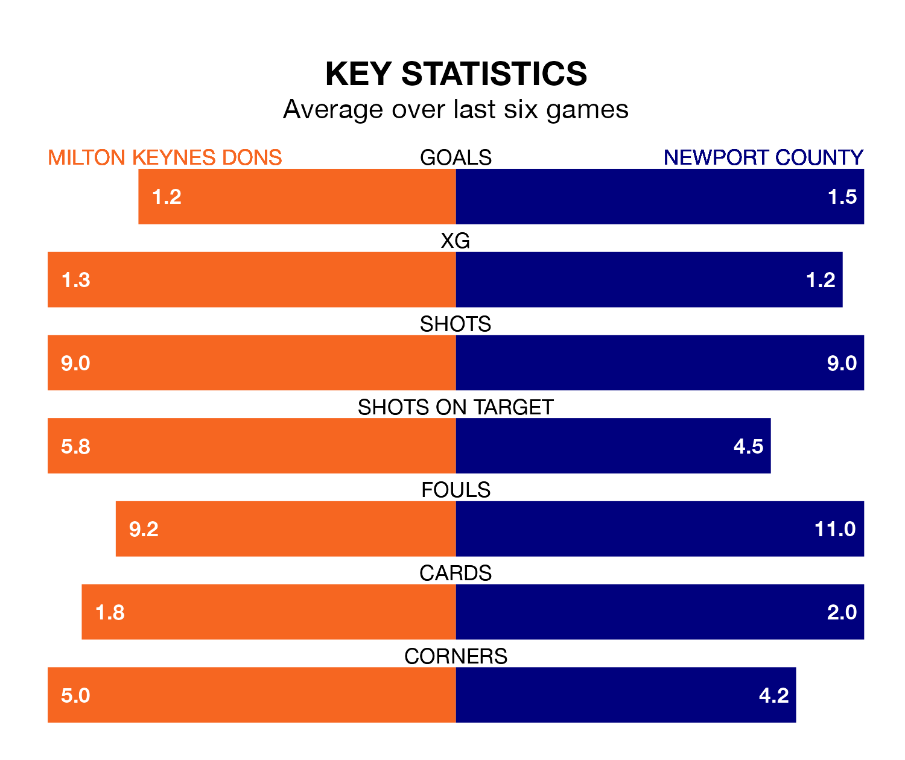

Milton Keynes Dons are heavy favourites to keep all three points at home in Saturday's kick-off against Newport County.
The Dons, who sit fifth in EFL League Two with 33 games played, are priced at 1.6 to seal victory at Stadium mk.
Sitting 10 places and nine points behind them in the table, Newport are 4.8 to win with *Betting Company*, while the draw is at 4.0.
With 52 goals in 33 games so far this season, Milton Keynes are scoring more than average in the league with 1.6 goals per game. And they are conceding fewer than average, letting in 44 goals at a rate of 1.3 per game.
Newport, meanwhile, are average scorers, with 1.5 goals per game. They have also conceded 1.5 goals per game.
In the last 10 years, Milton Keynes and Newport have played each other on six occasions. Milton Keynes won four of them, Newport one, and they drew once.
On average, the Dons scored 1.5 goals and the Exiles 1.0 in those matches.
Their last meeting was on November 11, when they played out a 0-0 draw.
In Will Evans, County have one of the league's sharpest shooters so far this season. He has notched 19 goals in 32 appearances, to sit third in the scoring charts.
His goal rate of one every 140 minutes is quicker than that of Max Dean, Dons' top scorer with a goal every 170 minutes, and a total of nine goals in 22 games.
The Dons are in mixed form in EFL League Two, with three wins and a draw from their last six games.
With five wins and one loss over that period, the Exiles' form is better – they have taken 15 points from 18, compared to the hosts' 10.
Milton Keynes's last match was on Tuesday, a 1-1 draw against Wrexham, with Daniel Kemp getting the goal for the Dons.
Newport beat Gillingham 1-0 last time out, on February 17, with Will Evans on the scoresheet.
Updated: 10:08 (UTC), 23/02/24